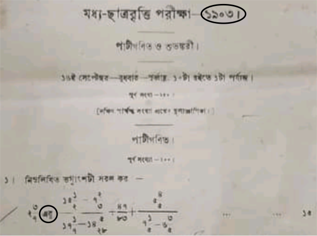

[Home]
Table of contents
অর্ণব চক্রবর্তী, ইণ্ডিয়ান স্ট্যাটিস্টিকাল ইন্সটিটিউট, কলকাতা
সিদ্ধার্থশংকর চট্টোপাধ্যায়, অবসরপ্রাপ্ত শিক্ষক, বিধাননগর গভঃ হাই স্কুল
স্কুলশিক্ষার জগতে প্রায়শঃই কোনো কিছু মুখস্থ রাখার জন্য চট্ জলদি বটিকার দেখা পাওয়া যায়৷ মোগল বাদশাহরা
পর্যবসিত হন বাবার জ্বর সারানোর কাহিনীতে (''বাবার হইল আবার জ্বর সারিল ঔষধে''), কেন্দ্রশাসিত অঞ্চলগুলো চপলা
সেজে দিদিমার দোরে ধাক্কা দেয় (''অ দিদা গো আমি চপলা'', কেন্দ্রশাসিত অঞ্চলগুলোর নামাবলী মুখস্থ রাখার
এই টোটকাটি অবশ্য আধুনিক ভারতবর্ষে আর কাজ করে না)৷ তা, বুদ্ধি না খাটিয়ে শর্টকাটে মেরে দেবার এইসব কায়দাতে
নানা বিপত্তি ঘটে৷ সেই যেমন একটি ছাত্রের গল্প শুনেছিলাম, যে খামোখা ভৌতবিজ্ঞানের $P=I^2R$
ফর্মুলাটা গুলিয়ে ফেলে $P=R^2I$ করে ফেলত৷ তাকে কে একজন মনে রাখার অমোঘ নিদান দিল--
Twinkle twinkle little star,
$P$ is equal to $I^2R$
শুনে সে ভারী খুশি৷ পরীক্ষার হলে যেই ফের তার মাথা গুলিয়েছে, অমনি সে মনে মনে আবৃত্তি শুরু করল--
Twinkle twinkle little star
How I wonder what you are
Up above the world so high
$P$ is equal to $R^2I.$
তা, এটা নিছক বানানো একটা হাসির গল্প হল৷ এবার একটা সত্যিকারের গল্প বলব, যেটা ''শুনলে পরে হাসির চেয়ে কান্না আসে
বেশী!''
এই গল্পের নায়ক হল BODMAS. এর সঙ্গে পরিচয় নেই, বঙ্গদেশে এমন স্কুলপড়ুয়া মেলা ভার৷ তাও একটু গোড়া থেকেই শুরু
করি৷ আমরা যেসব সংখ্যা নিয়ে কাজ করি, তাদের জন্য চারটে operation আছে, যোগ, বিয়োগ, গুণ, ভাগ৷ এরা সকলেই
binary operation, অর্থাৎ দুটো সংখ্যাকে মিলিয়ে একটা সংখ্যাতে পরিণত করে (যদিও ভাগের বেলায় একটু বাড়তি
সমস্যা আছে, শূন্য দিয়ে ভাগ করা যায় না)৷
Binary operation-দের ব্যবহার করতে হলে বলে দিতে হয় কোন্ দুটো সংখ্যাকে
মেলানো হবে৷ সেইটা
বোঝানোর জন্য আমরা ব্র্যাকেট ব্যবহার করি৷ যেমন $(2+3)-5$-এর মধ্যে দুটো binary operation রয়েছে
$+$ আর $-.$ প্রতিটার ভোগের জন্য এক জোড়া করে সংখ্যাও নৈবেদ্য দেওয়া আছে, $+$-এর জন্য
$2$ আর $3,$ এবং $-$-টার জন্য $(2+3)$ এবং $5.$ কিন্তু এভাবে প্রতিটা
binary operation-এর নৈবেদ্যকে আলাদা করে পাঁচিল তুলে ভাগ করতে হলে অনেক অনেক
ব্র্যাকেট এসে কাঁটাফোলানো শজারুর মত দেখাবে, যেমন
$$(3\times(4+ 5))-((4\times 4)\div 6).$$
এ জিনিস লিখতেও কষ্ট, পড়তেও কষ্ট৷ সেই কারণে লোকে একটা প্রথা সৃষ্টি করেছে, যাতে কিছু কিছু ব্র্যাকেট
আর আলাদা করে না লিখলেও আমরা ওদের উপস্থিতি বুঝে নিতে পারি৷ ঠিক যেমন মাষ্টারমশাই নাম ডাকার সময়ে যেই বলেন ''চোদ্দো'',
অমনি ছাত্ররা বুঝে নেয় ''রোল নম্বর চোদ্দো ক্লাসে হাজির থাকলে সাড়া দাও,'' সেরকম আর কি! সেই প্রথাটা এই--
প্রথমে দেখতে হবে
সবচেয়ে গভীরে কী কী ব্র্যাকেট আছে (মানে যাদের ভিতরে আর কোনো ব্র্যাকেট নেই)৷ তার ভিতরে operation-গুলোকে বাঁদিক
থেকে ডানদিকে পড়তে থাকো, যদি কোনো গুণ বা ভাগ পাও, তৎক্ষণাৎ সেটা করে নাও৷ এইভাবে চলতে চলতে এক সময়ে সব গুণভাগ
করা হয়ে যাবে৷ এবার ফের বাঁদিক থেকে শুরু করো, এবার একই কাজ করবে যোগ বিয়োগ নিয়ে৷ যেই পুরোটা করা হয়ে গেল তখন
আর এই ব্র্যাকেটটা রাখার দরকার রইল না৷ এবার আবার বাঁদিক থেকে শুরু করো৷
এই হল নিয়ম৷ এর মধ্যে মহান কোনো গাণিতিক তত্ত্ব নেই, স্রেফ লেখার সময়ে পরিশ্রম বাঁচানোর
জন্য একটা প্রথা মাত্র৷ যেমন, এই নিয়ম মানলে একটু আগের সজারুটা তার চারজোড়া ব্র্যাকেটের তিন জোড়াই মোচন করে এই ভদ্রসভ্য
রূপ লাভ করবে--
$$3\times(4+ 5)-4\times 4\div 6.$$
বাকি ব্র্যাকেটগুলোর অস্তিত্ব এখনো আছে, কিন্তু লিখে বোঝাতে হচ্ছে না৷
আরেকটা উদাহরণ দেখি--
$$
6\times5\times4\div8\div5\times7
=
((((6\times5)\times4)\div8)\div5)\times7
$$
এখানে খালি গুণ আর ভাগ ছিল, তাই বাঁদিক থেকে ডানদিকে করে গেলেই হল৷ আরেকটু জটিল
উদাহরণ হবে--
$$2+3\times4\div (5+4) = 2+((3\times4)\div (5+4)).$$
কায়দাটা খুবই কঠিন লাগল কি? যাই হোক, স্কুলশিক্ষার ঐতিহ্য মেনে এর জন্যও লোকে শর্টকাট বের
করেছে৷ এরকমই একটা শর্টকাটের নাম হল BODMAS.
BODMAS হল একটা সংক্ষিপ্ত রূপ, এখানে B মানে ব্র্যাকেট, O মানে
of, D মানে division, M মানে
multiplication, A হল addition আর S হল গিয়ে
subtraction. এই শর্টকাটের বক্তব্য হল--প্রথমে ব্র্যাকেটের ভিতরের কাজ করো,
তারপর of, তারপর ভাগ, তারপর গুণ, তারপর যোগ এবং অবশেষে বিয়োগ৷
দেখতে চমৎকার, খালি তিনটে সমস্যা৷ একে একে বলি৷
ধরো বললাম $1-2+3$ বার করতে৷ তুমি অমনি BODMAS মেনে প্রথমে যোগটা করবে, ফলে পাবে $1-5.$
এবার বিয়োগটা করলে পাবে $-4,$ যেটা ভুল৷ অমনি তুমি বলবে, আহাহা, আমি অমুকচন্দ্র তমুকের বইতে পড়েছি, ''যদি
পরপর কেবলমাত্র যোগ আর বিয়োগ থাকে তাহা হইলে বাঁদিক হইতে আরম্ভ করিবে'', অতএব প্রথমে $1-2=-1$ এবং
তারপরে $-1+3=2$ হওয়া উচিত৷ ঠিক কথা৷ কিন্তু তাহলে BODMAS-টা কেমনধারা নিয়ম হল? স্পষ্ট বলছে
S-এর আগে A, অথচ সেটা সবসময়ে করা চলবে না৷ অংকের দুনিয়ায় এরকম নিয়মের কোনো স্থানই থাকতে
পারে না৷ আসলে D এবং M-এর মধ্যে কিংবা A এবং S-এর মধ্যে কারোরই কোনো
অগ্রাধিকার নেই৷ শর্টকাটওয়ালারা বেশ একটা উচ্চারণযোগ্য শর্টকাট বানানোর নেশায় ওইভাবে ওদের সাজিয়েছেন৷ কোনো কোনো
অজ্ঞ মানুষ সেটাকে অংকশাস্ত্রের বেদবাক্য ধরে ছাত্রদের গেলাবার চেষ্টা করেন৷
এক্ষুণি যে অমুক চন্দ্র তমুকের বই থেকে ''বাঁদিক হইতে ডানদিকে যাইবে'' বললাম, সেই কথাটা কিন্তু
অত্যন্ত দরকারী৷ যেমন যদি $3-1-1$ লিখি, তবে কোন্ বিয়োগটা আগে করছি, তার উপর নির্ভর করে উত্তরটা বদলে
যাবে৷ তাই সে বিষয়ে একটা নিয়ম থাকতে হবে৷ এবং ''বাঁদিক হইতে ডানদিকে যাইবে''-টাই হল সেই নিয়ম৷ BODMAS
সেই বিষয়ে সম্পূর্ণ নীরব৷
BODMAS-এর মধ্যে of বলে একটি operation-এর উল্লেখ আছে৷
দুঃখের কথা, এই নামে কোনো operation
অংকের দুনিয়ায় নেই৷ কথাটা শুনে অনেকেই চমকে উঠবেন, কারণ ছেলেবেলা থেকে আমরা সকলেই এই
''of''-এর গল্প শুনে আসছি৷ এমন কি 1903 সালের একটা প্রশ্নপত্রেও এই উল্লেখ পাওয়া যায়--
|  |
| জনাব শামসুল আলমের Facebook পাতা থেকে পাওয়া |
শতাধিক বছর যাবৎ যে জিনিস চলে আসছে, তাকে হঠাৎ এক ফুৎকারে উড়িয়ে দিলে আপত্তি উঠতেই পারে৷ অবশ্য বহুদিন
ধরে চলে এলেই যে কোনো ধারণা সঠিক হতেই হবে, এমন কোনো কথা নেই৷ সতীদাহ প্রথার ঐতিহ্য এর চাইতেও গভীরতর
ছিল৷ কিন্তু যাই হোক, এই ''of''-এর ব্যাপারটা একটু
খুলে বলা দরকার৷ মাধ্যমিক স্কুলশিক্ষার গণ্ডীর মধ্যে আমরা যেসব সংখ্যা নিয়ে কাজ করি, তারা
হল real number বা বাস্তব সংখ্যা৷ অংকের দুনিয়ার সব জিনিসের মতই এদেরও
যাবতীয় ধর্ম, আচার, আচরণ সুস্পষ্ট নিয়মে বাঁধা৷ সেই নিয়মগুলিকে বলে একেকটা
axiom. এদের সম্পূর্ণ তালিকা যেকোনো real analysis-এর বইতেই পাওয়া যায়৷ এদের
উপর একবার চোখ বোলালেই দেখা যাবে যে এখানে যোগ এবং গুণের কথা আছে, যোগের উল্টো হিসেবে
বিয়োগের কথা আছে, এবং গুণের উল্টো হিসেবে ভাগের কথাও আছে৷ কিন্তু ''of'' নামে
কোনো কিছুর কথাই নেই৷ তাহলে ''of''-টা এলো কোথা থেকে? তার স্পষ্ট কারণ জানি না,
তাই অনুমানের উপর নির্ভর করে বলছি৷ অংক
জিনিসটা abstract,
কিছু symbol নাড়াচাড়ার
নিয়মকানুন মাত্র৷ বাস্তব জগতের বিভিন্ন ইন্দ্রিয়গ্রাহ্য জিনিসকে আমরা সেই ভাষায় প্রকাশ করতে
পারি৷ যেমন--
বাবা দুটো আপেল দিল, মা আরো তিনটে দিল, মোট আপেল কটা হল?
এই প্রশ্নটা অংকের ভাষায় হয়ে যায় $2+3=5.$ আবার যদি বলি
দুই মাইল উত্তরে যাবার পর আরও তিন মাইল উত্তরে গেলাম,
তবে সব মিলিয়ে কত দূরে গেলাম?
এরও গাণিতিক রূপ সেই $2+3=5.$ অর্থাৎ ''একসঙ্গে মিলিয়ে গোণা'' এবং ''একই দিকে আরো দূরত্ব যাওয়া'' এই দুইই অংকের
ভাষায় হল যোগ৷ কোনো বাস্তব সমস্যায় অংক প্রয়োগ করার আগে সর্বদাই সমস্যাটকে প্রথমে অংকের ভাষায় অনুবাদ করে নিতে
হয়৷ সেটা সহজ এমন দাবী করছি না, এবং যেকোনো শিক্ষকেরই একটা গুরু দায়িত্ব হল এই অনুবাদ প্রক্রিয়াটি শেখানো৷ এবং
সেখানেও শর্টকাটে মারতে গিয়ে সমস্যা বাঁধে৷ কীভাবে বলি৷
''He became nervous.'' বাক্যের বঙ্গানুবাদ হিসেবে যদি কেউ লেখে ''সে নার্ভাস হয়ে পড়ল'', তবে সেটাকে সম্পূর্ণ অনুবাদ
বলা যায় না, কারণ ''nervous'' বা ''নার্ভাস'' যাই লিখি না কেন, ওটা বাংলা শব্দ নয়৷
অনুবাদকারী এখানে কাজে ফাঁকি দিয়েছে৷
ইংরাজির বেলায় যেরকম অংকে বেলাতেও তাই৷ অনুবাদটা সম্পূর্ণ করা চাই৷ অর্ধেকটা করে বাকিটুকু ''বোঝাই যাচ্ছে'' বলে চালিয়ে
দেওয়াটা ঠিক নয়৷ ঠিক সেই সমস্যা থেকেই of-এর জন্ম৷ যদি বলতে চাই--
ঘরে তিনটে মেয়ে আর
পাঁচটি ছেলে আছে, তাদের
অর্ধেকের মধ্যে চব্বিশটি লজেন্স সমান ভাগ করে দিতে হলে প্রত্যেকে কটা করে পাবে?
তবে তার গাণিতিক রূপ হবে
$$24\div \left(~\frac 12\times(3+5)~\right).$$
সেটা না করে অনেকেই শর্টকাটে মেরে দেবার চেষ্টা করেন, এবং সম্ভবতঃ সেখান থেকেই ''of''-এর উৎপত্তি--
$$24\div \frac 12\text{ of }(3+5).$$
এটা দেখতে সহজতর, এবং মূল বর্ণনার সঙ্গে এর সাদৃশ্যও বেশী৷ এবং ফাঁকিটুকুর দোষ ঢাকতে বাধ্য হয়েই মিথ্যে বলতে
হয় যে ''of''-ও আসলে অংকেরই একটা operation. ওটা যে আসলে গুণ এতে সন্দেহ নেই, কিন্তু ওই গুণটা ভাগের
আগে না করলে হিসেব মিলবে না, অতএব ফের একটা গোঁজা চাপাতে হয় of-টা গুণ হয়েও গুণাতীত, ভাগেরও আগে ওর স্থান৷
এইভাবে নতুন একটা operation বানিয়ে অংকের মধ্যে গুঁজে দেওয়া বিপজ্জনক৷
অংকের সূত্রগুলো খুব যত্ন করে তৈরী করা, যাতে ওদের মধ্যে কোথাও দুরকম মানে হয়ে যাবার সুযোগ না থাকে৷ তার জন্য
বিস্তর লোকে মাথা খাটিয়েছে৷ আমরা যদি শর্টকাট করার জন্য নতুন নতুন নিয়ম ঢোকাতে থাকি, তবে তার মধ্যে ফাঁক থেকে
যায় বিস্তর৷ যেমন একদল সৃজনশীল গুণী মানুষ এই of-এর জনপ্রিয়তায় উৎসাহিত হয়ে আরেকটি
গুণাতীত গুণের সৃষ্টি করে বসে আছেন
$\frac 12(3+5)$ হল $\frac 12\times (3+5)$-এরই মত, কিন্তু এটিও
of-এর মত, ভাগের আগে করতে হবে৷
এই জিনিস যে ছাত্রেরা শিখবে তাদের কি দুরবস্থা তার জাজ্বল্যমান একটি নিদর্শন সম্প্রতি নজরে এসেছে৷ সোশাল মিডিয়ায়
কেউ একজন লিখেছিলেন $64\div 2(2+2)$ কত হবে? মাষ্টারমশায়রা এই নিয়ে দুই দলে ভাগ হয়ে গিয়েছেন, কেউ
বলছেন $128,$
আবার কেউ বলছেন $8.$ মাষ্টারমশায়দেরই যদি এই দুর্গতি, তবে তাঁদের ছাত্রদের না জানি কি অবস্থা৷ এই প্রসঙ্গে
রবীন্দ্রনাথের গোরা উপন্যাসের একটা জায়গা মনে পড়ল৷ গোরার দাদা মহিম ছাপোষা মানুষ, মেয়ের বিয়ে দেওয়ার জন্য হন্যে হয়ে
পাত্র খুঁজছিলেন৷ এমন সময়ে গোরার বন্ধু বিনয়কে দেখে তাকে জামাই করার বাসনায় তাড়া করেছেন৷ বেগতিক দেখে বিনয় বলেছে
ইয়ে দেখুন, আমার পরিবারের একটা নিয়ম আছে, আমরা অঘ্রাণ মাসে বিয়ে করি না৷ এই কথায় হতাশ মহিমের সখেদ উক্তি--''একে তো
পোড়া দেশে শুভদিন খুঁজেই পাওয়া যায় না, তার উপর আবার ঘরে ঘরে প্রাইভেট পাঁজি খুলে বসলে
কাজকর্ম চলবে কী করে?''
আজকের যুগ কম্পিউটারের যুগ৷ এইরকম প্রাইভেট পাঁজি নিয়ে চলতে গেলে সেখানেও হোঁচট খেতে হবে৷
আমরা বীজগণিত শেখার সময়ে শিখেছি $2x$ আসলে $2\times x.$ অতএব $x = 2+2$ হলে
$64\div2x = 64\div 2\times x.$ এবার আমরা কম্পিউটারে বা ক্যালকুলটরে যখন লিখব 64/2*x তখন
উত্তরটা মোটেই মিলবে না৷ তখন আমরা কোন্টা রাখব, প্রাইভেট পাঁজি নাকি কম্পিউটার? নাকি বলব, $2x$ মানে সব
সময়ে $2\times x$ নয়?
এ লেখাটি এতক্ষণ যাঁরা ধৈর্য্য করে পড়েছেন, তাঁদের অনেকেই হয়তো বলবেন, সে তো না হয় বুঝলাম, কিন্তু সরকারী বইতেও
তো এ বিষয়ে স্পষ্ট নির্দেশ নেই৷ চিন্তার বিষয় বৈ কি! আন্তর্জাতিক আধুনিক গণিতশাস্ত্র কী বলেছে তার হাওয়া তো স্কুলের
পাল অব্ধি বড় একটা পৌঁছোয় না৷ সেখানে সিলেবাসপ্রণেতারাই বেশী গুরুত্বের অধিকারী৷ শুনেছি আমাদের
দেশের অনুন্নত কিছু গ্রামে
স্থানীয় দারোগার এতই দাপট
যে, সেখানকার লোকেদের কাছে দারোগার কথাই দেশের আইন, তার বিরুদ্ধে আপীলও চলে না৷ তবু
বলতেই হয় যে দেশে আইন বলে সত্যিই আলাদা কিছু একটা আছে,
এবং যদি এই স্বেচ্ছাচারী দারোগাকে শায়েস্তা করতেই হয়, তবে সেই আসল আইনের দ্বারস্থ হওয়াই সর্বোৎকৃষ্ট পন্থা৷
আমাদের বেলায় সেই আসল আইন হল অংকের সর্বজনস্বীকৃত নিয়ম৷ কথা হল সেগুলো কোথায় পাওয়া যায়? স্কুলপাঠ্য বিষয়
নিয়ে সাধারণতঃ rigourous-ভাবে কিছু লেখা পাওয়া যায় না৷ সৌভাগ্যক্রমে, আমাদের আলোচনায় যে নিয়মগুলো
লাগবে সেগুলোর rigourous সংস্করণ আছে৷ তার কারণ হল ক্যালকুলেটর এবং কম্পিউটার৷
বিশ্বের তাবৎ ক্যালকুলেটর
আর কম্পিউটারের মধ্যে প্রোগ্রাম করে ঢোকানো আছে যোগবিয়োগ গুণভাগের সূত্রগুলো৷ যেহেতু যন্ত্রগুলোর কোনো বুদ্ধি নেই, এবং
(তাদের সৃজনশীলতাও বিপদসীমার অনেক নীচে), তাই ওদেরকে বোঝানোর জন্য যে প্রোগ্রাম করা হয়, সেখানে বাধ্য হয়েই সব কিছু
খুঁটিয়ে খুঁটিয়ে বলা থাকে, পাঠ্য বইয়ের মত গোটা কয়েক উদাহরণ দেখিয়েই দায় সারা হয় না৷
সেখানে যে কায়দা আছে, সেটাই হল বর্তমানে অংকের দুনিয়ার স্বীকৃত কায়দা৷ এই কায়দার দুটি স্তম্ভ--precedence
এবং associativity. প্রথমটা বলছে বিভিন্ন ধরণের operation-এর মধ্যে কোনটা আগে কোনটা পরে
করতে হবে৷ যোগ বিয়োগ গুণ ভাগের মধ্যে যোগ আর বিয়োগের সমান precedence, এবং গুণ আর ভাগেরও নিজেদের
মধ্যে সমান precedence, এবং $\{\times,\div\}$-এর precedence হল $\{+,-\}$-এর
চেয়ে বেশী৷ এবার associativity বলবে, একই precedence-এর কিছু operation পরপর থাকলে
কোনটা আগে হবে৷ বাঁদিকেরটা আগে হলে left associative আর ডানদিকেরটা আগে হলে right associative.
তা, আমাদের বেলায় সকলেই left associative (এই কারণেই সেই ''বাঁদিক হইতে ডানদিকে যাইবে'' মন্ত্রটা কাজ করে)৷
যদি আমরা এমন কোনো কিছু লিখতে চাই যেটা এর বাইরে, তবে সেটা ব্র্যাকেট দিয়ে বোঝাতে হবে৷ বস্তুতঃ, যোগ করা একাধারে
left associative এবং right associative. গুণও তাই৷ কিন্তু বিয়োগ আর ভাগ কেবলমাত্র left associative.
সেই কারণে নেহাত যদি গুণ আর ভাগের মধ্যে precedence-এর তারতম্য আনতেই হয়, তবে ভাগটাই আগে করা উচিত (সেখানে
BODMAS-এর সঙ্গে মিল)৷ কিন্তু একই যুক্তিতে যোগ বিয়োগের মধ্যে যদি precedence-এর তারতম্য চাই, তবে
বিয়োগ আসবে আগে (সেখানে BODMAS হোঁচট খায়)৷
Precedence আর associativity-র কায়দায় আরো অনেক কিছু সামলানো যায়৷ যেমন মাইনাস চিহ্নটা খালি যে বিয়োগ
বোঝাতেই ব্যবহৃত হয় তাই নয়, negation
বোঝাতেও কাজে লাগে, যেমন $-(2+3).$ তাই সেটা আসলে একটা আলাদা operation, যাকে বলে unary minus. (এখানে
unary মানে যেটা একটা মাত্র সংখ্যা নিয়ে কাজ করে)৷ এই operation-টার
precedence সবার আগে৷ BODMAS-এর প্রবক্তারা সম্ভবতঃ এই কথাটা ভুলে গিয়েছিলেন৷ আরো একটা
জিনিস হল power. আমরা যখন $2^3$ লিখি, তখন অনেক সময়েই খেয়াল করি না যে ওই ''একটু উপরে উঠিয়ে
লেখা''-টাও আসলে একটা binary operation. ক্যালকুলেটর বা কম্পিউটারের বেলায় অবশ্য সেটা আর গোপন থাকে না, কারণ
power-টা বোঝানোর জন্য সেখানে কিছু একটা টিপতেই হয়৷ সেই operation-টা কিন্তু right associative,
যেমন $2^{3^4}$ মানে আগে $3^4$ করে তারপরে সেটাকে $2$-এর ঘাড়ে চাপাতে হবে৷
যাই হোক, এ নিয়ে আর কথা বাড়াব না৷ পরিশেষে আইনস্টাইনের একটা কথা উল্লেখ করি--
যে কোনো বিষয়কেই বোঝানোর সময়ে যথাসম্ভব
সহজ করে বোঝানো উচিত, কিন্তু তার চাইতেও সহজ করে ফেললেই বিভ্রাট৷
BODMAS সূত্রটিও এইরকম একটি অতিসহজীকরণের
দৃষ্টান্ত৷ যথাসাধ্য ভালোর চেয়ে আরো ভালো করে বোঝানোর হাতছানিতে শিক্ষকমশায়রা সাড়া না দিলেই
ছাত্রদের ভবিষ্যতে মঙ্গল হবে৷